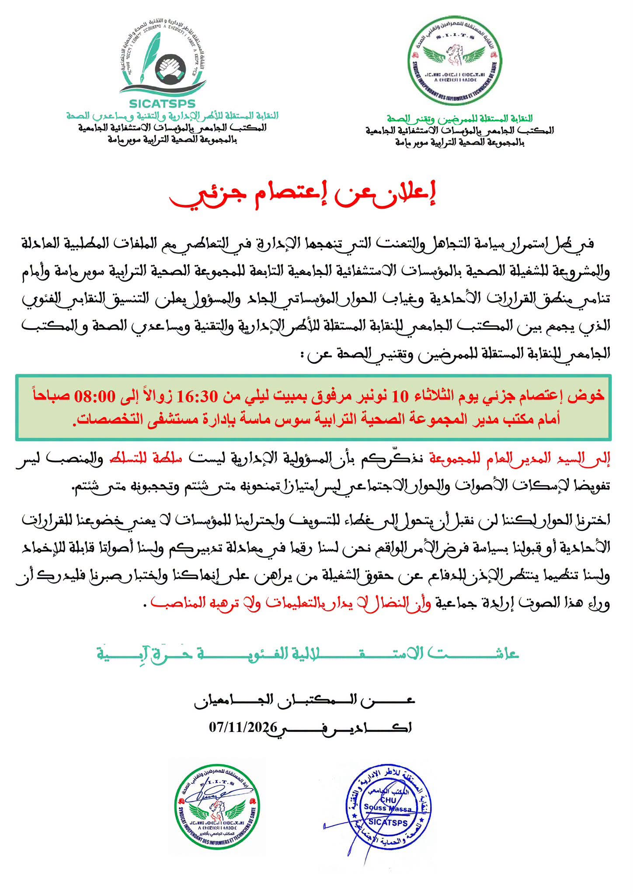

أكادير: اعتصام جزئي بمبيت ليلي أمام مكتب مدير المجموعة الصحية الترابية سوس ماسة يوم الثلاثاء 10 نونبر

في ظل استمرار سياسة التجاهل والتعنت التي تنهجها الإدارة في التعاطي مع الملفات المطلبية العادلة والمشروعة للشغيلة الصحية بالمؤسسات الاستشفائية الجامعية التابعة للمجموعة الصحية الترابية سوس ماسة، وأمام تنامي منطق القرارات الأحادية وغياب الحوار المؤسساتي الجاد والمسؤول، يعلن التنسيق النقابي الفئوي الذي يجمع المكتب الجامعي للنقابة المستقلة للممرضين وتقنيي الصحة والمكتب الجامعي للنقابة المستقلة للأطر الإدارية والتقنية ومساعدي الصحة عن خوض اعتصام جزئي.
📅 يوم الثلاثاء 10 نونبر 2026 🕟 من الساعة 16:30 زوالاً إلى الساعة 08:00 صباحاً، مرفوقاً بمبيت ليلي 📍 أمام مكتب مدير المجموعة الصحية الترابية سوس ماسة بإدارة مستشفى التخصصات بأكادير
وذكّر المكتبان الجامعيان المدير العام للمجموعة بأن المسؤولية الإدارية ليست سلطة للتسلط، وأن الحوار الاجتماعي ليس امتيازاً يُمنح ويُحجب متى شاءت الإدارة. «اخترنا الحوار، لكننا لن نقبل أن يتحول إلى غطاء للتسويف، واحترامنا للمؤسسات لا يعني خضوعنا للقرارات الأحادية».
فالنضال لا يُدار بالتعليمات ولا ترهبه المناصب.
فتح في تطبيق النقابة